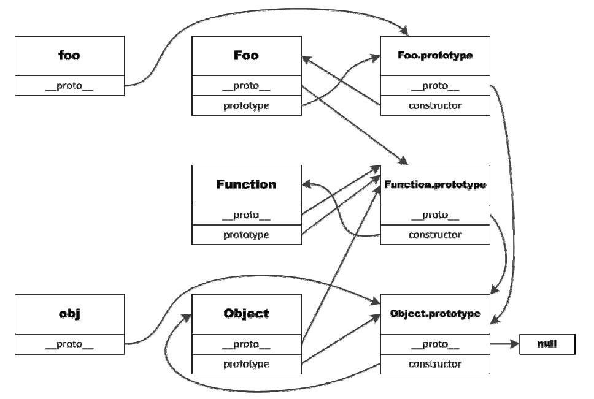

用来设置页面的锚点值，可以获取或设置页面的标签值，主要是结合ajax来使用，模仿实现页面的“前进”、“后退”功能。注意：IE6和IE7不支持。
也可以用window.location.hash来伪造地址栏中的假地址，需要结合ajax实现，用户看不到实际访问的url。如以下代码，处理href变为hash
window.location.hash = this.href.replace(/.+\/([^\/]+)\/index\.html/,'$1') + '|default';
上面正则表达式的意思是：匹配“除换行符以外的任意字符一次或多次”，接着是“/”，然后是“除去/的任意字符一次或多次”，最后是“/index.html”。 匹配成功后，用正则表达式括号中的匹配内容替换。这里用到了正则表达式中的“后向引用”。例如可以匹配以下内容: “../list/list2/index.html”， 这时括号中匹配的值为“list2”，所以上面的表达式执行结果为：list2|default
在head标签中加入该代码<base target="_self"/>即可
为了判断一个对象是否包含自定义属性而不是原型链上的属性， 我们需要使用继承自 Object.prototype 的 hasOwnProperty 方法。hasOwnProperty 是 JavaScript 中唯一一个处理属性但是不查找原型链的函数。
注意: 通过判断一个属性是否 undefined 是不够的。 因为一个属性可能确实存在，只不过它的值被设置为 undefined。
看下面的例子
// 修改Object.prototype
Object.prototype.bar = 1;
var foo = {goo: undefined};
foo.bar; // 1
'bar' in foo; // true
foo.hasOwnProperty('bar'); // false
foo.hasOwnProperty('goo'); // true
当检查对象上某个属性是否存在时，hasOwnProperty 是唯一可用的方法。 同时在使用 for in loop 遍历对象时，推荐总是使用 hasOwnProperty 方法， 这将会避免原型对象扩展带来的干扰。
JavaScript 有一套完全不同于其它语言的对 this 的处理机制。 在五种不同的情况下 ，this 指向的各不相同。
当在全部范围内使用 this，它将会指向全局对象。浏览器中运行的 JavaScript 脚本，这个全局对象是 window。
注意:ECMAScript 5 中在严格模式下（strict mode），不存在全局变量。 这种情况下 this 将会是 undefined。
foo();
这里 this 也会指向全局对象。
test.foo();
这个例子中，this 指向 test 对象。
new foo();
如果函数倾向于和 new 关键词一块使用，则我们称这个函数是构造函数。 在函数内部，this 指向新创建的对象。
function foo(a, b, c) {}
var bar = {};
foo.apply(bar, [1, 2, 3]); // 数组将会被扩展，如下所示
foo.call(bar, 1, 2, 3); // 传递到foo的参数是：a = 1, b = 2, c = 3
当使用 Function.prototype 上的 call 或者 apply 方法时，函数内的 this 将会被显式设置为函数调用的第一个参数。因此函数调用的规则在上例中已经不适用了，在foo 函数内 this 被设置成了 bar。
该方法在ie9以下版本不支持。我们可以使用 bind 方法来永久地绑定函数的上下文，使其无论被谁调用，上下文都是固定的。bind 语法如下：
func.bind(thisArg[, arg1[, arg2[, ...]]])
其中 func 是待绑定函数，thisArg 是改变的上下文对象，arg1、arg2 是绑定的参数表。bind 方法返回值是上下文为 thisArg 的 func。通过下面例子可以帮你理解 bind的使用方法：
var foo = {
name: 'foo',
fun: function () {
alert(this.name);
}
};
var bar = {
name: 'bar'
};
bar.fun1 = foo.fun.bind(foo);
bar.fun2 = foo.fun;
bar.fun1();//输出 foo
bar.fun2();//输出 bar
bind 方法还有一个重要的功能：绑定参数表，如下例所示。
var person = {
name: 'byvoid',
says: function (act, obj) {
console.log(this.name + ' ' + act + ' ' + obj);
}
};
person.says('loves', 'diovyb'); // 输出 byvoid loves diovyb
byvoidLoves = person.says.bind(person, 'loves');
byvoidLoves('you'); // 输出 byvoid loves you
注意: 在对象的字面声明语法中，this 不能用来指向对象本身。 因此 var obj = {me: this} 中的 me 不会指向 obj，因为 this 只可能出现在上述的六种情况中。 这个例子中，如果是在浏览器中运行，obj.me 等于 window 对象。
JavaScript 会提升变量声明。这意味着 var 表达式和 function 声明都将会被提升到当前作用域的顶部。
bar();
var bar = function() {};
var someValue = 42;
test();
function test(data) {
if (false) {
goo = 1;
} else {
var goo = 2;
}
for(var i = 0; i < 100; i++) {
var e = data[i];
}
}
上面代码在运行之前将会被转化。JavaScript 将会把 var 表达式和 function 声明提升到当前作用域的顶部。
如果没有提升规则（hoisting）的知识，下面的代码看起来会抛出异常 ReferenceError。
// 检查 SomeImportantThing 是否已经被初始化
if (!SomeImportantThing) {
var SomeImportantThing = {};
}
实际上，上面的代码正常运行，因为 var 表达式会被提升到全局作用域的顶部。
比如，当访问函数内的 foo 变量时，JavaScript 会按照下面顺序查找：
typeof 操作符（和 instanceof 一起）或许是 JavaScript 中最大的设计缺陷， 因为几乎不可能从它们那里得到想要的结果。typeof 只有一个实际的应用，这个实际应用是用来检测一个对象是否已经定义或者是否已经赋值，而却不是用来检查对象的类型。
首先看一下JavaScript 类型
Value Class Type
-------------------------------------
"foo" String string
new String("foo") String object
1.2 Number number
new Number(1.2) Number object
true Boolean boolean
new Boolean(true) Boolean object
new Date() Date object
new Error() Error object
[1,2,3] Array object
new Array(1, 2, 3) Array object
new Function("") Function function
/abc/g RegExp object (function in Nitro/V8)
new RegExp("meow") RegExp object (function in Nitro/V8)
{} Object object
new Object() Object object
虽然不能用typeof来判断对象的数据类型，但我们可以用Object.prototype 上的方法 toString来判断。
JavaScript 标准文档中定义: [[Class]] 的值只可能是下面字符串中的一个： Arguments, Array, Boolean, Date, Error, Function, JSON, Math, Number, Object, RegExp, String.
JavaScript 标准文档只给出了一种获取 [[Class]] 值的方法，那就是使用 Object.prototype.toString。
function is(type, obj) {
var clas = Object.prototype.toString.call(obj).slice(8, -1);
return obj !== undefined && obj !== null && clas === type;
}
is('String', 'test'); // true
is('String', new String('test')); // true
上面例子中，Object.prototype.toString 方法被调用，this 被设置为了需要获取 [[Class]] 值的对象。
Object.prototype.toString 返回一种标准格式字符串，所以上例可以通过 slice 截取指定位置的字符串，如下所示：
Object.prototype.toString.call([]) // "[object Array]"
Object.prototype.toString.call({}) // "[object Object]"
Object.prototype.toString.call(2) // "[object Number]"
在 ECMAScript 5 中，为了方便，对 null 和 undefined 调用 Object.prototype.toString 方法， 其返回值由 Object 变成了 Null 和 Undefined。这种变化可以从 IE8 和 Firefox 中看出区别，如下所示：
// IE8
Object.prototype.toString.call(null) // "[object Object]"
Object.prototype.toString.call(undefined) // "[object Object]"
// Firefox 4
Object.prototype.toString.call(null) // "[object Null]"
Object.prototype.toString.call(undefined) // "[object Undefined]"
typeof 唯一的用法就是测试变量是否被定义
typeof foo !== 'undefined'
上面代码会检测 foo 是否已经定义；如果没有定义而直接使用会导致 ReferenceError 的异常。 这是 typeof 唯一有用的地方。
为了检测一个对象的类型，强烈推荐使用 Object.prototype.toString 方法； 因为这是唯一一个可依赖的方式。正如上面表格所示，typeof 的一些返回值在标准文档中并未定义， 因此不同的引擎实现可能不同。除非为了检测一个变量是否已经定义，我们应尽量避免使用 typeof 操作符。
setTimeout 只会执行回调函数一次，不过 setInterval - 正如名字建议的 - 会每隔 X 毫秒执行函数一次。 但是却不鼓励使用这个函数。
当回调函数的执行被阻塞时，setInterval 仍然会发布更多的回调指令。在很小的定时间隔情况下，这会导致回调函数被堆积起来。
function foo(){
// 阻塞执行 1 秒
}
setInterval(foo, 1000);
上面代码中，foo 会执行一次随后被阻塞了一分钟。在 foo 被阻塞的时候，setInterval 仍然在组织将来对回调函数的调用。 因此，当第一次 foo 函数调用结束时，已经有 10 次函数调用在等待执行。
为了处理可能的阻塞调用，最简单也是最容易控制的方案，是在回调函数内部使用 setTimeout 函数。
function foo(){
// 阻塞执行 1 秒
setTimeout(foo, 1000);
}
foo();
这样不仅封装了 setTimeout 回调函数，而且阻止了调用指令的堆积，可以有更多的控制。 foo 函数现在可以控制是否继续执行还是终止执行。
建议不要在调用定时器函数时，为了向回调函数传递参数而使用字符串的形式。
function foo(a, b, c) {}
// 不要这样做
setTimeout('foo(1,2, 3)', 1000)
// 可以使用匿名函数完成相同功能
setTimeout(function() {
foo(a, b, c);
}, 1000)
javascript 中，这两个运算符与强类型语言中的不太一样，请看下面的各种情况：
当作为条件表达式时，与强类型语言中一样，&&首先会计算表达式前面的，如果为false，则不再计算后面的，如果为true，则会计算后面的表达式。同理，||则相反。
看下面的例子
var obj1 = 'str',obj2 = obj1 && {
end: obj1
};
console.log(obj2);//Object { end="str"}
var str = undefined,str2 = str && {
end: str
};
console.log(str2);//undefined
var str3 = null,str4 = str3 && 0;
console.log(str4);//null
从上面的运行结果看，&&运算符，当前面的表达式为true时，会返回后面表达式的值；当前面的表达式为false时，如果后面的表达式为true时，则会返回前面表达式的值，如果后面的表达式也为false时，则会返回前面表达式的值。注意这一点与强类型语言不一样，这里的true或false指的是 (!variable)计算的值。
var obj1 = 'str',obj2 = obj1 || {
end: obj1
};
console.log(obj2);//str
var str = undefined,str2 = str || {
end: 'object1'
};
console.log(str2);//Object { end="object1"}
var str3 = undefined,str4 = str || null;
console.log(str4);//null
从上面的例子可以看出，当||前面的表达式为true时，则会返回前面表达式的值，如果为false时，则会返回后面表达式的值。返回表达式时也是如此。总之，&& 和 || 作为赋值或返回表达式时，返回的都是前面或后面表达式的值。而不像强类型语言返回的是true或false。
不同的浏览器对这两个属性的支持是不一样的，在ie7中contentDocument会返回undefined，所以我们写code的时候需要注意，下面是兼容性的写法
var iframe = $('iframe')[0];
var doc = iframe.contentWindow ? iframe.contentWindow.document :
iframe.contentDocument ? iframe.contentDocument : iframe.document;
看以下例子：
function Person() {
}
Person.prototype.name = 'BYVoid';
Person.prototype.showName = function () {
console.log(this.name);
};
var person = new Person();
person.showName();
上面这段代码使用了原型而不是构造函数初始化对象。这样做与直接在构造函数内定义属性有什么不同呢？
构造函数内定义的属性继承方式与原型不同，子对象需要显式调用父对象才能继承构造函数内定义的属性。
构造函数内定义的任何属性，包括函数在内都会被重复创建，同一个构造函数产生的两个对象不共享实例。
构造函数内定义的函数有运行时闭包的开销，因为构造函数内的局部变量对其中定义的函数来说也是可见的。
下面这段代码可以验证以上问题：
function Foo() {
var innerVar = 'hello';
this.prop1 = 'BYVoid';
this.func1 = function () {
innerVar = '';
console.log(this.prop1);
};
}
Foo.prototype.prop2 = 'Carbo';
Foo.prototype.func2 = function () {
console.log(this.prop2);
};
var foo1 = new Foo();
var foo2 = new Foo();
console.log(foo1.func1 == foo2.func1); // 输出 false
console.log(foo1.func2 == foo2.func2); // 输出 true
//以下是简单继承，自己为了理解写的例子
function SubFoo(){};
SubFoo.prototype = new Foo();
SubFoo.prototype.constructor = SubFoo;
var subFoo1 = new SubFoo();
subFoo1.func1();// 输出 'BYVoid'
subFoo1.func2();// 输出 'Carbo'
尽管如此，并不是说在构造函数内创建属性不好，而是两者各有适合的范围。那么我们什么时候使用原型，什么时候使用构造函数内定义来创建属性呢？
除非必须用构造函数闭包，否则尽量用原型定义成员函数，因为这样可以减少开销。
尽量在构造函数内定义一般成员，尤其是对象或数组，因为用原型定义的成员是多个实例共享的。
我们可以在firefox上测试以下代码（Object {} 表示实例Object， Object () 表示祖先Object对象）
console.log(Function);//Function() 0
console.log(Function.constructor);//Function() 1
console.log(Function.prototype);//function() 2
console.log(Function.__proto__);//function() 3
console.log(Function.__proto__.prototype);//undefined 4
console.log(Function.__proto__.__proto__);//Object {} 5
console.log(Function.prototype.constructor);//Function() 6 console.log(Function.__proto__.constructor);//Function()
console.log(Function.__proto__.__proto__.__proto__);//null 7
console.log(Function.__proto__.__proto__.prototype);//undefined 8
console.log(Function.__proto__.__proto__.constructor);//Object() 9
console.log(Object);//Object()
console.log(Object.constructor);//Function() 10
console.log(Object.prototype);//Object {} 11
console.log(Object.__proto__);//function() 12
从以上测试可以总结以下几种情况
有以上几种情况就可以迅速计算出任意结果的返回值，比如
console.log(Function.prototype.__proto__);//Object {} Function.prototype返回function，而function.__proto__返回Object
console.log(Object.constructor.prototype);//function() 根部Object.constructor返回Function，而Function.prototype返回function
关于 Function、function、Object()和Object {}之间的关系，回头补充一张关系图，这样会更清晰一些。
知道了Function与Object原型和构造函数之间的关系后，我们通过一个例子来分析一下原型链模型实现。
var Foo = function() {};
Object.prototype.name = 'My Object';
Foo.prototype.name = 'Bar';
var obj = new Object();
var foo = new Foo();
console.log(obj.name); // 输出 My Object
console.log(foo.name); // 输出 Bar
console.log(foo.__proto__.name); // 输出 Bar
console.log(foo.__proto__.__proto__.name); // 输出 My Object
console.log(foo.__proto__.constructor.prototype.name); // 输出 Bar
console.log(Foo.prototype); // 输出 Bar
我们定义了一个叫做 Foo ()的构造函数，生成了对象 foo。同时我们还分别给 Object和 Foo 生成原型对象。这里补充一下：定义一个函数，有以下几种
var foo1 = function(){};
function foo2(){}
var foo3 = new Function();
var foo4 = Function;
我们一般采取第一种和第二种来定义，第三和第四中不推荐使用，因为会调用其构造函数来创建。
下图是解析上面例子原型之间错综复杂的关系

在 JavaScript 中，继承是依靠一套叫做原型链（prototype chain）的机制实现的。属性继承的本质就是一个对象可以访问到它的原型链上任何一个原型对象的属性。例如上例的foo 对象，它拥有 foo. __proto__ （继承于Foo.prototype），而Foo.prototype.__proto__会继承Object.prototype 。这些原型链继承是所有属性的浅拷贝（只复制基本数据类型，不复制对象，对象是引用的）。
综上所述：JavaScript 中有两个特殊的对象： Object 与 Function，它们都是构造函数，用于生成对象。Object.prototype 是所有对象的祖先，Function.prototype 是所有函数的原型，包括构造函数。JavaScript 中的对象分为三类，一类是用户创建的对象，一类是构造函数对象，一类是原型对象。用户创建的对象，即一般意义上用 new 语句显式构造的对象。构造函数对象指的是普通的构造函数，即通过 new 调用生成普通对象的函数。原型对象特指构造函数 prototype 属性指向的对象。这三类对象中每一类都有一个 __proto__ 属性，它指向该对象的原型，从任何对象沿着它开始遍历都可以追溯到 Object.prototype。构造函数对象有 prototype 属性，指向一个原型对象，通过该构造函数创建对象时，被创建对象的 __proto__ 属性将会指向构造函数的 prototype 属性。原型对象有 constructor属性，指向它对应的构造函数。
JavaScript 和 Java 一样都没有像C语言中一样的指针，所有对象类型的变量都是指向对象的引用，两个变量之间赋值传递一个对象并不会对这个对象进行复制，而只是传递引用。有些时候我们需要完整地复制一个对象，这该如何做呢？Java 语言中有 clone 方法可以实现对象复制，但 JavaScript 中没有这样的函数。因此我们需要手动实现这样一个函数，一个简单的做法是复制对象的所有属性：
Object.prototype.clone = function() {
var newObj = {};
for (var i in this) {
newObj[i] = this[i];
}
return newObj;
}
var obj = {
name: 'byvoid',
likes: ['node']
};
var newObj = obj.clone();
obj.likes.push('python');
console.log(obj.likes); // 输出 [ 'node', 'python' ]
console.log(newObj.likes); // 输出 [ 'node', 'python' ]
上面的代码是一个对象浅拷贝（shallow copy）的实现，即只复制基本类型的属性，而共享对象类型的属性。浅拷贝的问题是两个对象共享对象类型的属性，例如上例中 likes 属性指向的是同一个数组。
实现一个完全的复制，或深拷贝（deep copy）并不是一件容易的事，因为除了基本数据类型，还有多种不同的对象，对象内部还有复杂的结构，因此需要用递归的方式来实现：
Object.prototype.clone = function () {
var newObj = {};
for (var i in this) {
if (typeof(this[i]) == 'object' || typeof(this[i]) == 'function') {
newObj[i] = this[i].clone();
} else {
newObj[i] = this[i];
}
}
return newObj;
};
Array.prototype.clone = function () {
var newArray = [];
for (var i = 0; i < this.length; i++) {
if (typeof(this[i]) == 'object' || typeof(this[i]) == 'function') {
newArray[i] = this[i].clone();
} else {
newArray[i] = this[i];
}
}
return newArray;
};
Function.prototype.clone = function () {
var that = this;
var newFunc = function () {
return that.apply(this, arguments);
};
for (var i in this) {
newFunc[i] = this[i];
}
return newFunc;
};
var obj = {
name: 'byvoid',
likes: ['node'],
display: function () {
console.log(this.name);
}
};
var newObj = obj.clone();
newObj.likes.push('python');
console.log(obj.likes); // 输出 [ 'node' ]
console.log(newObj.likes); // 输出 [ 'node', 'python' ]
console.log(newObj.display == obj.display); // 输出 false
上面这个实现看起来很完美，它不仅递归地复制了对象复杂的结构，还实现了函数的深拷贝。这个方法在大多数情况下都很好用，但有一种情况它却无能为力，例如下面的代码：
var obj1 = {
ref: null
};
var obj2 = {
ref: obj1
};
obj1.ref = obj2;
这段代码的逻辑非常简单，就是两个相互引用的对象。当我们试图使用深拷贝来复制obj1 和 obj2 中的任何一个时，问题就出现了。因为深拷贝的做法是遇到对象就进行递归复制，那么结果只能无限循环下去。对于这种情况，简单的递归已经无法解决，必须设计一套图论算法，分析对象之间的依赖关系，建立一个拓扑结构图，然后分别依次复制每个顶点，并重新构建它们之间的依赖关系。这种方法实现起来比较复杂，这里就不再讨论了。